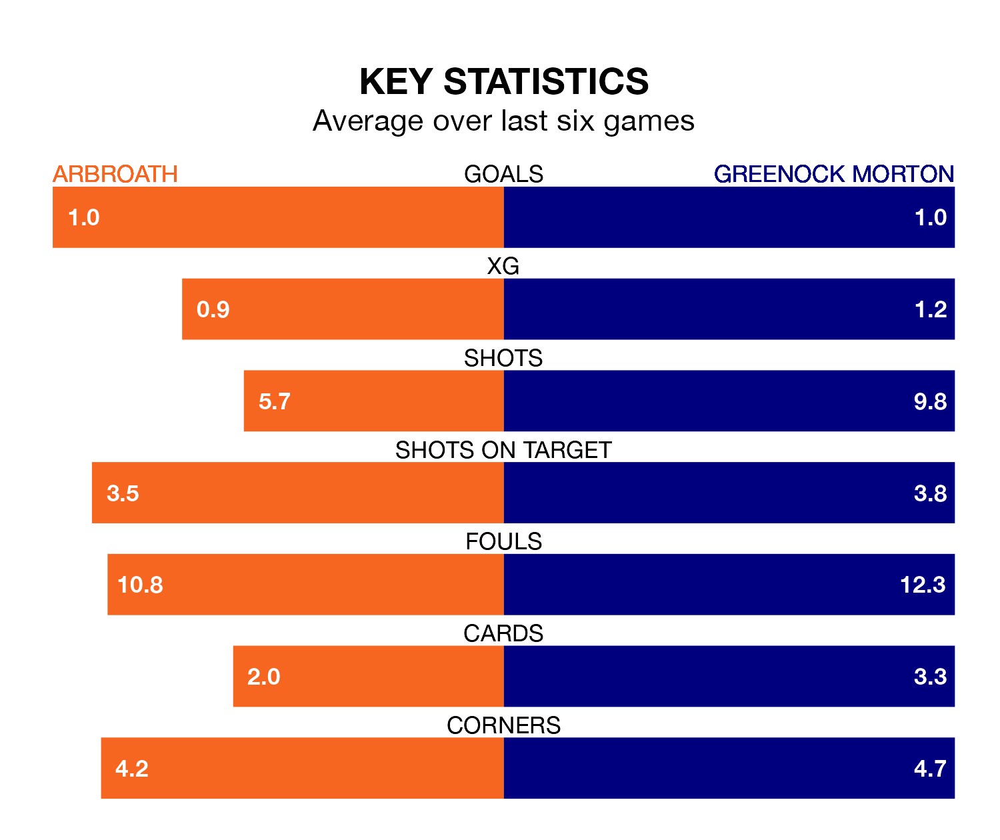

Saturday's match at Gayfield Park sees two relegation candidates play each other, as bottom of the table Arbroath host seventh-placed Greenock Morton.
Arbroath have picked up 23 points from their first 23 Championship games, with six wins and five draws.
That is 18 points less than the Ton have collected, having won 11 and drawn eight.
Arbroath are in awful form in the Championship, with no wins and six losses from their last six games.
With a win and a draw over that period, Greenock Morton's form is better – they have taken four points from 18, compared to the hosts' zero.
In the last 10 years, Arbroath and Greenock Morton have played each other on 18 occasions. Arbroath won seven of them, Greenock Morton four, and they drew seven times.
On average, Arbroath scored 1.2 goals and the Ton 0.9 in those matches.
Their last meeting was on January 27, when Greenock Morton won 3-0 at home.
In Robbie Muirhead, the Ton have one of the league's most on-form strikers so far this season. He has notched 12 goals in 30 appearances, to sit fourth in the scoring charts.
Arbroath's top scorers, with six goals each, are Jermaine Hylton and Jay Bird.
With 34 goals in 33 games so far this season, Arbroath are the league's lowest scorers with 1.0 goals per game. And they are conceding more than average, letting in 77 goals at a rate of 2.3 per game.
The away side are also below average scorers, with 1.2 goals per game, compared to a league average of 1.4. They have conceded 1.3 goals per game.
Arbroath's last match was on April 13, a 5-0 loss against Ayr United.
Greenock Morton lost 4-1 against Dundee United last time out, on April 12, with Muirhead on the scoresheet.
Updated: 11:31 (UTC), 15/04/24